“量子力学”描述物质和光的行为的各方面细节，特别是发生在原子尺度上的事件。在微小的尺度下事物的行为一点也不像我们有着直接经验的任何事物。它们的行为既不像波动，又不像粒子，也不像云雾，或弹子球，或悬挂在弹簧上的重物，总之不像我们曾经见过的任何东西。
牛顿认为，光是由微粒构成的，但是，之后发现光的行为像波动。然而，后来（在20世纪初叶）人们发现，光的行为有时确实又像粒子。又譬如，在历史上，电子起先被认为像粒子，后来发现它在许多方面的性质像波。所以，实际上它表现得两者都不像。现在我们不再说它到底是什么，我们说：“它什么都不像。”
然而，运气总算还好：电子的行为很像光。原子客体（电子、质子、中子、光子等等）的量子行为都是相同的，它们都是“粒子波”，或者随便什么你愿意称呼的名称。所以，我们所学的关于电子（我们将用它作为例子）的性质也可应用到所有的“粒子”，包括光子上。
在20世纪的前四分之一，有关原子与其他小尺度粒子行为的知识逐渐积累起来，给出了微小物体是如何活动的一些线索，由此也引起了越来越多的混乱，到1926和1927年，薛定谔、海森伯与玻恩终于解决了这些问题。他们最后对微小尺度物质的行为作出了协调一致的描述。本章中我们将开始研究这种描述的主要特点。
因为原子的行为与我们的日常经验不同，所以很难适应它，而且对每个人——不管是新手，还是有经验的物理学家——都显得奇特而神秘。甚至专家们也不能以他们所想要的方式去理解原子的行为，而且这是完全有道理的，因为一切人类的直接经验和所有的人类的直觉都只适用于大的物体。我们知道大物体的行为将是如何，但是在小尺度下事物的行为却并非如此。所以我们必须用一种抽象的或想象的方式，而不是把它与我们的直接经验联系起来的方式来学习它。
在本章中，我们将直接讨论以最陌生的方式出现的神秘行为的基本特征。我们选择用来考察的现象不可能，绝对 不可能，以任何经典方式来解释，但它却包含了量子力学的核心。事实上，它包含着独一无二的奥秘。我们不能通过“说明”它如何作用来消除这个奥秘。我们只是告诉你，它是怎样起作用的。在告诉你它怎样起作用的同时，我们也将告诉你所有量子力学的基本特色。
为了试图理解电子的量子行为，我们将在一个特殊的实验装置中，把它们的行为和我们较为熟悉的像子弹那样的粒子的行为以及如水波那样的波动的行为作一比较和对照。首先考虑子弹在图1-1中概略地画出的实验装置中表现的行为。我们有一挺机枪射出一连串子弹。但它不是一挺很好的机枪，因为它发射的子弹在相当大的角度内（随机地）散开，如图所示。在机枪的前方有一堵用铁甲板制成的墙，墙上开有两个孔，其大小正好能让一颗子弹穿过，墙的后面是一道后障（譬如说一道厚木墙），它能“吸收”打上去的子弹。在后障前面，有一个可称为“探测器”的物体。它可以是一个装着沙的箱子。进入探测器的子弹都被留在那里聚集起来。如果我们愿意的话，可以出空箱子，清点射到箱子里面的子弹数。探测器可以（沿我们称为x 的方向）来回移动。利用这个装置，我们可以通过实验找出以下问题的答案：“一子弹通过墙上的小孔后到达后障上离中心的距离为x 处的概率是多少？”首先，你们应当体会我们所谈的应该是概率，因为不可能肯定地说出某一特定的子弹会打到什么地方。一颗碰巧打到一个小孔上的子弹可能从孔的边缘弹开，最终打到某个地方。所谓“概率”，我们指的是子弹到达探测器的机会，这可以用以下方式来量度，数一下在一定时间内到达探测器的子弹数，然后算出这个数与这段时间内打到后障上的子弹总 数的比值。或者，如果假定在测量时间内机枪始终以同样的发射率发射子弹，那么我们所要求的概率就正比于在某个标准时间间隔内到达探测器的子弹数。
图1-1 子弹的干涉实验
为了我们现在的目的，设想一个多少有点理想化 的实验，其中子弹不是真正的子弹，而是不会裂开 的子弹，即它们不会分裂成两半。在实验中，我们发现子弹总是整颗整颗地到达，在探测器中找到的总是一颗颗完整的子弹。如果将机枪射击的发射率弄得十分低，那么我们发现在任何给定时刻，要么没有任何东西到达，要么有一颗，并且只有一颗——不折不扣的一颗——子弹打到后障上。而且，整颗的大小也必定与机枪射击的发射率无关。我们说：“子弹总是 以同样的整颗到达。”我们的探测器中测得的是整颗子弹到达的概率。我们测量的是作为x 的函数的概率。用这种仪器作这样的测量的结果画在图1-1（c）上（我们还从未曾做过这种实验，所以实际上是想象这种结果而已。），在图上，向右的水平轴表示概率的大小，垂直轴表示x ，这样x 的坐标就对应于探测器的位置。我们称这概率为P 12 ，因为子弹可能通过孔1，也可能通过孔2过来。你们不会感到奇怪，P 12 的值在接近图中心时大，而在x 很大时则变小。然而，你们可能感到惊奇的是：为什么x ＝0的地方P 12 具有极大值。假如我们先遮住孔2作一次实验，再遮住孔1作一次实验的话，就可以理解这一点。当孔2被遮住时，子弹只能通过孔1，我们就得到（b）图上标有P 1 的曲线。正如你们会预料的那样，P 1 的极大值出现在与枪口和孔1在一条直线上的x 处。当孔1关闭时，我们得到图中所画出的对称的曲线P 2 。P 2 是通过孔2的子弹的概率分布。比较图1-1的（b）与（c），我们发现一个重要的结果
概率正好相加。两个孔都开放时的效果是各个孔单独开放时的效果之和。我们称这个结果为“无干涉 ”的观测，其理由不久就会明白。关于子弹我们就讲这些，它们整颗地出现，到达的概率不显示干涉现象。
现在我们要来考虑一个水波实验。实验装置概略地画在如图1-2中。这里有一个浅水槽，一个标明为“波源”的小物体由马达带动作上下振动激起圆形波。在波源的后面也有一堵带两个孔的墙，墙以后又是另一堵墙。为了简单起见，设这后一堵墙是一个“吸收器”，因而波到达这里后不被反射。吸收器可以用逐渐倾斜的“沙滩”做成，在沙滩前，放置一个可以沿x 方向前后移动的探测器，和先前的一样。不过现在这个探测器是一个测量波动“强度”的装置。你们可以设想一种能测量波动高度的装置，但其刻度则标成与实际高度的平方 成比例，这样读数正比于波的强度。于是，我们的探测器的读数正比于波携带的能量 ，或者更确切地说，正比于被带至探测器能量的速率。
在我们这个波动实验中，第一件值得注意的事是强度的大小可以是任意值 ，如果波源只作很小的运动，那么在探测器处就只有微弱的波动。当波源的振动较强时，在探测器处的强度就较大。无论如何，波的强度可以为任意值。我们不会 说在波的强度上能显示出任何“颗粒性”。
现在，我们来测量不同x 处的波的强度（保持波源一直以同样的方式振动）。我们得到图1-2（c）上标有I 12 有趣样式的曲线。
图1-2 水波干涉实验
我们在第1卷中学习电磁波的干涉时，已经算出怎样会产生这种图样。在这种情况中，我们会观察到原始波在小孔处发生衍射，新的圆形波从各个小孔向外扩展。如果我们分别一次遮住一个小孔，并且测量吸收器处的强度分布，则得到如图1-2（b）所示的相当简单的强度曲线。I 1 是来自孔1的波的强度（在孔2被遮住时测得），I 2 是来自孔2的波的强度（在孔1被遮住时测得）。
当两个小孔都开放时所观察到的强度I 12 显然不是 I 1 与I 2 之和。我们说，两列波产生了“干涉”。在某些位置上（在那里曲线I 12 有极大值）两列波“同相”，其波峰相加就得到一个大的振幅，因而得到大的强度。我们说，在这些地方，两列波之间发生“相长干涉”。凡是从探测器到一个小孔的距离比到另一个小孔的距离大（或小）了波长整数倍的那些地方，都会产生这种相长干涉。
在两列波抵达探测器时相位差为π （称为“反相”）的那些地方，合成波的振幅是两列波的振幅之差。这两列波发生“相消干涉”，因而得到的波的强度低。我们预料这种低的强度值出现在探测器到小孔1的距离与到小孔2的距离之差为半波长的奇数倍的那些地方。图1-2中I 12 的低值对应于两列波相消干涉的那些位置。
你们一定会记得I 1 ，I 2 与I 12 之间的定量关系可以用以下方式来表示：来自孔1的水波在探测器处的高度瞬时值可以写成h 1 eiωt （的实部），这里“振幅”h 1 一般来说是复数。波动强度则正比于均方高度，当我们用复数表示时，则正比于|h 1 |2 。类似地，对来自孔2的波，高度为h 2 eiωt ，强度正比于|h 2 |2 。当两个孔都开放时，由两列波的高度相加得到总高度（h 1 ＋h 2 ）eiωt 以及强度|h 1 ＋h 2 |2 。就我们目前的要求来说，可略去比例常数，于是对相互干涉的波 适用的关系就是：
你们会注意到，这个结果与在子弹的情况下所得到的结果（式1.1）完全不同。如果将|h 1 ＋h 2 |2 展开，就可以看到：
这里δ 是h 1 与h 2 之间的相位差。用强度来表示时，我们可以写成：
式（1.4）中最后一项是“干涉项”。关于水波就讲这一些。波的强度可以有任何数值，这显示出干涉现象。
现在我们想象一个用电子做的类似实验。图1-3中描绘了此实验的概略图。我们制造了一把电子枪，它包括一根用电流加热的钨丝，外面套有一个开有小孔的金属盒，如果钨丝相对金属盒处于负电位时，由钨丝发射出的电子将被加速飞往盒壁，其中有一些会穿过盒上的小孔。所有从电子枪出来的电子都带有（差不多）相同的能量。在枪的前方也有一堵墙（就是一块薄金属板），墙上有两个小孔。这道墙的后面有另一块作为“后障”的板。在后障的前面我们放置一个可移动的探测器。它可以是盖革计数器，或者更好一些，是一台与扩音器相连的电子倍增器。
我们应当直接了当地告诉你不要试着去做这样一个实验（虽然你可能已做过我们所描述的前面两个实验）。这个实验从未以这样的方式做过。问题在于，为了显示我们所感兴趣的效应，仪器的尺寸必须小到制造不出来的程度。我们做的是一个“理想实验”。之所以要选它，是因为它易于想象。我们知道这个实验会 得到怎样的结果，因为有 许多已经做过的实验，在那些实验中，已在选用的适当的尺度与比例上显示了我们将要描写的效应。
图1-3 电子的干涉实验
在这个电子的实验中，我们注意到的第一件事是听到探测器（即从扩音器）发出尖锐的“卡嗒”声。所有的“卡嗒”声全都相同，决没有 “半卡塔”声。
我们还会注意到“卡嗒”声的出现很不规则。比如像：卡嗒……卡嗒卡嗒……卡嗒……卡嗒……卡嗒卡嗒……卡嗒，等等，无疑，这就像人们听到盖革计数器工作时的声音一样。假如我们计数在足够长的时间内——譬如说在许多分钟内——听到的卡嗒声的数目，然后再在另一个相等的时间间隔内再进行一次计数，我们发现两个数值非常接近。所以，我们能够谈论“卡嗒”声出现的平均速率（平均每分钟多少次卡嗒声）。
在我们移动探测器时，声响出现的速率有快有慢，但是每次“卡嗒”声的大小（响度）总是相同的。假如我们降低枪内钨丝的温度，卡嗒声的速率就会减慢，但是每一声“卡嗒”仍然是同样响。我们还可以注意到，如果在后障前分别放置两个探测器，那么这一个或 那一个将会“卡嗒”发声，但是决不会二者同时发声（除非偶尔两次“卡嗒”声在时间上非常靠近，以致我们的耳朵可能辨别不出它们是分开的响声）。因此，我们得出结论，任何到达后障的东西总是呈“颗粒”的形式。所有的“颗粒”都是同样大小：只有“整颗”到达，并且每一次只有一颗到达后障。我们说：“电子总是以完全相同的‘颗粒’到达。”
与子弹的实验一样，我们现在开始从实验上寻找下列问题的答案：“‘整颗’电子到达后障上离中心之距离为不同的x 处的相对概率是多少？”像前面一样，在保持电子枪稳定工作的情况下，我们可以从观察“卡嗒”声出现的速率来得出相对概率。颗粒到达某个特定x 位置的概率正比于该处的卡嗒声的平均速率。
我们这个实验的结果就是图1-3（c）所画出的标有P 12 的一条有趣的曲线。不错！电子的行为就是这样。
现在，我们来分析一下图1-3的曲线，看看是否能够理解电子的行为。我们要说的第一件事是，由于它们整颗整颗地出现，每一颗粒，就是所谓的电子，要么通过小孔1，要么通过小孔2。我们以“命题”的形式写下这一点：
命题A ：每一个电子要么 通过小孔1要么 通过小孔2。
有了命题A，所有到达后障的电子就可分为两类：（1）通过小孔1的电子；（2）通过小孔2的电子。这样，我们所观察到的曲线必定是通过小孔1的电子所产生的效应与通过小孔2的电子所产生的效应之和。我们用实验来检验这个想法。首先，我们测量通过小孔1的那些电子。我们把小孔2遮住，数出探测器的“卡嗒”声，由响声出现的速率，我们得到P 1 。测量的结果如图1-3（b）中标有P 1 的曲线所示。这个结果看来是完全合理的。以类似的方式，可以测量通过小孔2的电子概率分布P 2 。这个测量的结果也画在图上。
当两个 小孔都打开时测得的结果P 12 显然不是各个孔单独开放时的概率P 1 与P 2 之和。与水波实验类似，我们说：“这里发生了干涉。”
对于电子 ：
怎么会发生这样的干涉呢？或许我们应当说：“嗯，这大概意味着：整颗电子要么经过小孔1，要么经过小孔2这一命题是不正确 的，如果是这样的话，概率就应当相加。或许它们以一种更复杂的方式运动。它们分裂为两半，然后……”但是，不对！不可能如此。它们总是整颗地到达……。“那么，或许其中有一些电子经过小孔1后又转回到小孔2，然后又转过几圈，或者按某个其他的复杂路径……于是，我们遮住小孔2后，就改变了从小孔1出发 的电子最后落到后障上某处的机会……。”但是，请注意！当两个 孔都开放时在某些点上只有很少电子到达，但是如果关闭一个孔时，则该处接收到许多电子，所以关闭 一个孔就增加 了通过另一个小孔后来到该点电子的数目。然而，必须注意在图形的中心，P 12 要比P 1 ＋P 2 还大两倍。这又像是关闭一个孔就减少了通过另一个孔到来的电子数。看来用电子以复杂方式运动这一假设是很难解释上述两种 效应的。
所有这些都是极其神秘的。你考虑得越多，就越会感到神秘。人们曾经提出许多设想，试图用单个电子以复杂方式绕行通过小孔来解释P 12 曲线。但是没有一个得到成功，没有一个人能由P 1 与P 2 得到P 12 的正确曲线。
然而，足以令人惊奇的是，将P 1 和P 2 与P 12 联系起来的数学 是极其简单的。因为P 12 正好像图1-2中的曲线I 12 ，而那条曲线 是简单的。在后障上发生的情况可以用两个称为φ 1 和φ 2 的复数（当然它们是x 的函数）来描述。φ 1 的绝对值平方给出了小孔1单独开放时的效应。也就是说，P 1 ＝|φ 1 |2 。同样只有小孔2单独开放时的效应由φ 2 给出，即P 2 ＝|φ 2 |2 。两个孔的联合效应正是P 12 ＝|φ 1 ＋φ 2 |2 。这里的数学 与水波的情形是一样的！（很难看出从电子沿着某些奇特的轨道来回穿过洞孔这种复杂的游戏中能得出如此简单的结果。）
我们的结论是：电子作为粒子总是以完整颗粒的形式到达，这些颗粒到达概率的分布则像波的强度的分布。正是从这个意义来说，电子的行为“有时像粒子，有时像波”。
顺便指出，在处理经典波动时，我们定义强度为波的振幅平方对时间的平均值，并且使用复数作为简化分析的数学技巧。但是在量子力学中结果发现振幅必须 用复数表示。仅有实部是不行的。目前，这是一个技术上的问题，因为公式看上去完全一样。
既然电子穿过两个小孔到达后障的概率分布虽然并不等于（P 1 ＋P 2 ）但仍旧如此简单，要说的一切实际上都在这里了。但是在自然界以这种方式活动的事实中，还包括了大量的精妙之处。我们现在打算向你们说明其中一些精妙之所在。首先，到达某个特定点的电子数目并不 等于通过小孔1后到达的数目加上通过小孔2后到达的数目，而从命题A得出的推论却与此相反。所以，毋庸置疑，我们应该作出结论说，命题A是不正确的 。电子要么 通过小孔1要么 通过小孔2这是不 正确的。但是这个结论可以用其他实验来检验。
现在来考虑如下的一个实验。在前述的电子仪器中我们加上一个很强的光源，放置在墙的后面，且在两个小孔之间，如图1-4所示。我们知道，电荷会散射光。这样，当电子通过某一小孔一路来到探测器时，无论如何它肯定是沿着某一路径来到并会将一些光散射到我们的眼睛中，因而我们可以看见 电子在哪里飞过。比方说，假如电子采取经过小孔2的路径，如图1-4上画出来的，我们应当看到来自图中标有A 的位置附近出现闪光。如果电子经过小孔1，我们可以预料在上面的小孔附近将看到闪光。假如发生这样的情形，我们看到在两个位置上同时出现闪光，那是因为电子分成了两半……。让我们来做这个实验吧！
图1-4 另一个电子的实验
我们所看到的情况是：每当 听到（后障处的）电子探测器发出一声“卡嗒”时，我们要么 在靠近小孔1处要么 在靠近小孔2处见到 闪光。但是决不会 同时在两处见到！无论探测器放在哪里，我们都观察到同样的结果。我们由这样的观察得出结论，在监看电子时，我们发现，电子不是通过这个孔就是通过另一个孔。在实验上，命题A必然是正确的。
那么，在我们否定命题A的论证中，有什么不对呢？为什么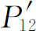 不 正好等于（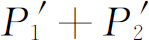 ）？我们还是回到实验上去！让我们跟踪电子，看看它们究竟做些什么。对于探测器的每一个位置（x 坐标），我们都对到达的电子计数，同时也 通过对闪光的观察记录下它们经过的是哪一个孔。可以这样来跟踪发生的过程：每当我们听到一声“卡嗒”时，如果在小孔1附近见到闪光，那么就在第一列中作一个记录，如果在小孔2附近见到闪光，那么就在第二列中作一个记录。所有抵达的电子都可分别记录在这两列中，即经过小孔1的一列和经过小孔2的一列。由第一列的记录我们可以得到电子经由小孔1到达探测器的概率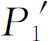 ；而由第二列的记录则可得到电子经由小孔2到达探测器的概率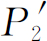 。如果现在对许多x 的值重复这样的测量，我们就得到图1-4（b）所画的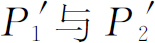 的曲线。
你们看，这里没有什么过分令人惊奇的事。所得到的 与我们先前遮住小孔2而得到的P 1 完全相似；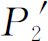 则与遮住小孔1所得到的P 2 相似。所以，像两个小孔都通过这样的复杂情况是不 存在的。当我们监看电子时，它们就像我们所预料的那样通过小孔。无论小孔2是开着还是关着，我们看到通过小孔1到来的电子分布都相同。
但是别忙！现在总概率 ，即电子以任何途径到达探测器的概率又是多少呢？我们已经有信息了。我们现在假装从未看到过闪光，而把先前分成两列的探测器“卡嗒”声次数归并在一起。我们只须 把这些数加 起来。对于电子经过随便哪一个 小孔到达后障的总概率，我们确实得出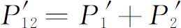 。这就是说，虽然我们成功地观察到电子所经过的是哪个孔，但我们再也得不到原来的干涉曲线P 12 ，而是新的、不显示干涉现象的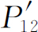 曲线！如果我们将灯熄灭，P 12 又出现了。
我们必须作出结论：当我们看着电子 时，它们在屏上的分布与我们不看着它时的分布不同。也许这是由于打开光源而干扰了事态？想必是由于电子本身非常精巧，因而光波受到电子散射时给电子一个反冲，因而改变了它们的运动。我们知道，光的电场作用在电荷上时会对它施加一个作用力。所以也许我们应当 预期到运动要发生改变。不管怎样，光对电子有很大的影响。在试图“跟踪”电子时，我们改变了它的运动。也就是说，当光子被散射时电子所受到的撼动足以改变其运动，以致原来它可能 跑到P 12 为极大值的那些位置上，现在却反而落到P 12 为极小值的那些位置上了；这就是为什么我们不再看到起伏的干涉效应的原因。
你们或许会想：“不要用这么强的光源！将亮度调低一些！光波变弱了，对电子的扰动就不会那么大。无疑，若使光越来越暗淡的话，最后光波一定会弱到它的影响可以忽略。”好，让我们来试一下。我们观察到的第一件事是电子经过时所散射出的闪光并没有 变弱。它总是同样强的闪光 。灯光暗淡后唯一发生的事情是，有时，我们听到探测器发出一声“卡嗒”，但根本看不到闪光 。电子在没有“被看到”的情况下跑了过去。我们所观察到的是：光的行为也 像电子，我们原来就知道 它是波动，但是现在发现它也是“颗粒状”的。它总是以我们称为光子的整颗的形式到达或者被散射。当我们降低光源的强度 时，我们并没有改变光子的大小 ，而只是改变了发射它们的速率。这 就解释了为什么在灯光暗淡时有些电子没有被“看到”就跑了过去。当电子经过时，周围正好没有光子。
这件事使人多少有点泄气。如果真的是每当我们“见到”电子，我们看到的是同样大小的闪光，那么所看到的总是 受到扰动的电子。不管怎样，我们用弱的灯光来做一下实验。现在，只要听到探测器中一声“卡嗒”，我们就在下述三列中的某一列记下一次：列（1）记的是在小孔1旁看到的电子；列（2）记的是小孔2旁看到的电子，根本没有看到电子时，则记在列（3）中。当我们把数据整理出来（计算概率）后可以发现这些结果：“在小孔1旁看到”的电子具有类似于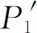 的分布；“在小孔2旁看到”的电子具有类似于 的分布（所以无论“在小孔1或者小孔2旁看到”的电子共同具有类似于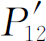 的分布）；而那些“根本没有看到”的电子则具有类似于图1-3的P 12 那样的“起伏的”分布！假如电子没有被看到 ，我们就会得到干涉现象 ！
这是可以理解的，当我们没有看到电子时，就没有光子干扰它，而当我们看到它时，它已经受到了光子的扰动。由于光子产生的都是同样大小的效应，所以扰动的程度也总是相同的，而且光子被散射所引起的效应足以抹掉任何干涉效应。
难道没有某种 可以不干扰电子而又使我们能看到它们的方法吗？在先前的一章中，我们知道，“光子”携带的动量反比于它的波长（p ＝h ／λ ）。无疑当光子被散射到我们的眼中时，它给予电子的扰动取决于光子所携带的动量。啊哈！如果我们只想略微扰动一下电子的话，那么降低的不应当是光的强度 ，而是它的频率 （这与增加波长一样）。我们使用比较红的光。甚至用红外光或无线电波（如雷达），并且借助于某种能“看到”这些较长波长的仪器来“观察”电子的行径。如果我们使用“较柔和”的光，那么或许可以不至于使电子扰动太大。
现在我们用波长较长的波来重复我们的实验。每次实验用波长越来越长的光。起先看不到什么变化。结果都是相同的。接着，可怕的事情发生了，你们会记得，当我们讨论显微镜时曾指出过，由于光的波动性质 ，仍旧可以分辨出是两个分离的点的两个靠近光点的距离有一个最小的极限。这个极限距离是光波波长的数量级。所以如果我们使波长大于两个小孔之间的距离，我们看到在光被电子散射时产生一团很大 的模糊不清的闪光。这样就不再能说出电子通过的是哪一个孔了！我们只知道它跑到某处去！正是对这种颜色的光，我们发现电子所受到的撼动已小到使 看来开始像P 12 ——即开始出现某种干涉的效应。只有在波长远大于两个小孔之间的距离时（这时我们完全不可能说出电子经过什么地方），光所引起的扰动足够地小，因而我们又得到图1-3所示的曲线P 12 。
在我们的实验中，我们发现不可能这样安排光源，即使人们既可以说出电子穿过哪个小孔，同时又不扰动分布图样。海森伯提出，只有认为我们的实验能力有某种前所未知的基本极限，才能使当时发现的新的自然界的定律协调一致。他提出了作为普遍原理的不确定性原理 ，在我们的实验中，它可以这样表述：“要设计出一种装置来确定电子经过哪一个小孔，同时又不使电子受到足以破坏其干涉图样的扰动是不可能的”。如果一套装置能够确定电子穿过哪一个小孔，它就不能 巧妙得使图样不受到实质性的扰动。还没有一个人找到（或者甚至想出）一条绕过不确定性原理的途径。所以我们必须假设它描述的是自然界的一个基本特征。
我们现在用来描写原子，事实上也描写所有物质的量子力学的全部理论都取决于不确定性原理的正确性。由于量子力学是这样一种成功的理论，我们对于不确定性原理的信任也就加强了。但是如果一旦发现了一种能够“推翻”不确定性原理的方法，量子力学就会得出自相矛盾的结果，因此也就不再是自然界的有效的理论，而应予以抛弃。
“很好”，你们会说：“那么命题A呢？电子要么通过小孔1，要么通过小孔2，这是正确的还是不 正确的呢？”唯一可能作出的回答是，我们从实验上发现，为了使自己不致陷于自相矛盾，我们必须按一种特殊方式思考问题。我们所必须说的（为了避免作出错误的预测）是：如果人们观察小孔，或者更确切地说，如果人们有一套装置能够确定电子究竟通过小孔1还是小孔2的话，那么他们就能够 说出电子穿过小孔1，或者穿过小孔2。但是 ，当人们不 想知道电子走的是哪条路，实验中没有干扰电子的因素时，那么他们可以不 去说电子通过了小孔1还是通过了小孔2。如果某个人一定要这么说，并且由此作出任何推论的话，他就会在分析中造成错误。这是一条逻辑钢丝，假如我们希望成功地描写自然的话，我们就不得不走这一条钢丝。
如果所有物质——包括电子——的运动都必须用波来描写，那么我们第一个实验中的子弹又怎样呢？为什么在那里我们看不到干涉图样？我们发现：对于子弹来说，其波长是如此之短，因而干涉图样变得非常细密。事实上，图样细密到人们用任何有限尺寸的探测器都无法分辨出它的分立的极大值与极小值。我们所看到的只是一种平均，那就是经典曲线。在图1-5中，我们试图示意地表明对大尺度物体所发生的情况。其中图（a）表示应用量子力学对子弹所预期的概率分布。假设快速摆动的条纹表示对于波长极短的波所得到的干涉图案。然而，任何物理探测器都跨越了概率曲线的好几个摆动，所以通过测量给出的是图（b）中的光滑曲线。
图1-5 子弹的干涉实验
（a）实际的图样（概图）；（b）观测到的图样
我们现在来小结一下前面实验中得出的主要结论。不过，我们将把结果表示成对于这一类的实验普遍适用的形式。假如先定义“理想实验（ideal experiment）”，那么这个小结就可以较为简单一些。在“理想实验”中没有任何不确定的外来影响，即没有不稳定或其他什么我们无法考虑的事情。更确切的说法是：“理想实验是所有的实验初始条件和最终条件都完全确定的实验。”我们说的“事件”，一般说来就是一组特定的初始与最终条件。（例如：“电子飞出电子枪，到达探测器，此外没有任何其他事情发生”。）下面就是我们的小结：
小结
（1）在理想实验中事件的概率由一个复数φ 的绝对值平方给出，φ 称为概率幅 (1) ：
（2）当一个事件可以按几种不同的方式发生时，该事件的概率幅等于各种方式分别考虑时的概率幅之和。此时出现干涉：
（3）如果完成一个实验，此实验能够确定实际上发生的是哪一种方式的话，则该事件的概率等于按各个不同方式发生的概率之和。此时不发生干涉：
人们也许还想问：“这是怎样起作用的？在这定律背后有什么机制？”还没有人发现定律背后的任何机制。也没有人能够“解释”得比我们勉强作出的“解释”更深入一些，更没有人会给你们对这种情况作更深刻的描述。我们没有能够推导出这些结果的更基本机制的概念。
我们要强调经典理论和量子力学之间的一个非常重要的差别 。我们一直谈论在给定的情况下，电子到达的概率。我们曾暗示：在我们的实验安排中（即使是可能作出的最好的一种安排）不可能准确预言会发生什么事。我们只能预言可能性！如果这是正确的，那就意味着，物理学已放弃了要准确预言在确定的环境下会发生的事情。正是！物理学已放弃 了这一点。我们不知道怎样去预言在给定的环境下会发生什么 ，而且我们现在相信，这是不可能的——唯一可以预言的是各种事件的概率。必须承认，这是我们早先认识自然界的理念的削弱。它或许是倒退了一步，但是还没有能看到避免这种倒退的方法。
现在，我们来评论一下人们有时提出的试图避免上述困难的一种见解。这种见解认为：“或许电子有某种我们目前还不知道的内部机理——某种内变量。或许这就是我们无法预言会发生什么事情的原因。如果我们能够更仔细地观察电子，我们就能说出它会到达哪里。”就我们所知，这是不可能的。我们仍旧没有摆脱困境。假设在电子内部有某种机制能够确定电子的去向，那么这种机制也 必定能够确定电子在途中将要通过哪一个孔。但是我们不要忘记，在电子内部的东西应当不依赖于我们 所做的事情，特别是不依赖于我们打开或关闭哪一个孔。所以，如果电子在开始运动前已打定主意：（a）它要穿过哪一个孔，（b）它将到达哪里，我们会发现选择小孔1的那些电子会得出P 1 ，选择小孔2的那些电子会得出P 2 ，通过两个孔的许多电子得出的概率必定 是求和P 1 ＋P 2 。看来没有别的解决方法了。但是我们从实验上已经证实情况并非如此。而现在还没有人能够解决这个难题。所以，在目前我们只能将我们自己局限于计算概率。我们说“在目前”，但是我们强烈地感觉到很可能永远如此——很可能永远无法解决这个难题——因为自然界实际上就是 如此。
海森伯原来对不确定性原理的叙述是这样的：假如对任一客体进行测量，你能以不确定量Δp 确定其动量的x 分量，你就不可能同时测定其位置比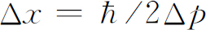 更准确，其中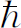 是自然界给出的确定的数。它称作“约化普朗克常量”，近似地等于1.05×10-34 J·s。在任何时刻，位置的不确定量和动量的不确定量的乘积必定大于约化普朗克常量的一半。上面所述的是较为一般的不确定性原理的特殊情况。比较普遍的表述是，人们不可能用任何方式设计出这样一种装置，可以用它来确定在两种可供选择的方式中采取的是哪一种方式，而同时又不破坏干涉图样。
图1-6 测出墙的反冲的实验
现在我们举一种特殊情况来说明，为了不致陷于困境海森伯给出的这种关系必须成立。我们设想对图1-3中的实验作一些修改，其中带有小孔的墙是一块装上滚子的板，这样它可以在x 方向上自由地上下滑动，如图1-6所示。仔细观察板的运动，我们可以试着说出电子通过的是哪个小孔。想象一下当探测器放在x ＝0处时会出现什么情况。我们可以预期对经过小孔1的电子，板必定使它往下偏折到达探测器。由于电子动量的垂直分量被改变了，板必定会以相等的动量向相反的方向反冲。它将被推向上。如果电子通过下面的小孔，板就会受到一个向下推力。很清楚，对于探测器的每一个位置，电子经由小孔1与经由小孔2时板所得到的动量是不同的。这样！完全 不必去扰动电子，只要盯着板 看，我们就可以说出电子取的是哪一条路径。
现在，为了做到这一点，必须知道电子通过以前板的动量。测出电子经过后板的动量就能算出板的动量改变了多少。但是要记住，根据不确定性原理，我们不能同时以任意高的准确度知道板的位置。而如果我们不知道板的确切位置 ，就不能精确地说出两个孔在哪里。对于各个经过小孔的电子来说，小孔是在不同的位置上。这意味着对于每个电子来说，干涉图样的中心在不同的位置上。于是干涉图样中的起伏将被抹去。下一章我们将定量地说明，假如我们能足够准确地测定板的动量从而由反冲动量的测量来确定电子经过的是哪一个孔，那么按不确定性原理，该板的x 位置的不确定量足以使探测器观察到的干涉图样的x 位置上下移动一定的距离，使得干涉极大移向最近的极小值的位置上。这种无规则的移动正好将干涉图样抹平，因而观察不到干涉现象。
不确定性原理“保护”了量子力学。海森伯认识到，假如有可能以更高的准确度同时测定动量与位置的话，量子力学就将坍塌。所以他认为这肯定不可能。于是人们试图找出一个能同时准确测量二者的方法，但是没有一个人找到一种方法能够以任何更高的精确度同时测出任何东西——屏障、电子、台球弹子等等——的位置与动量。量子力学一直担着风险，但仍旧是正确的。
————————————————————
(1) 概率幅的英文为probability amplitude，也可译作“概率振幅”。本书原文常简称为amplitude，译文也照译成“振幅”。——译者注